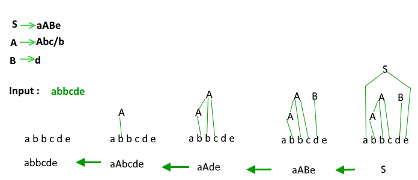
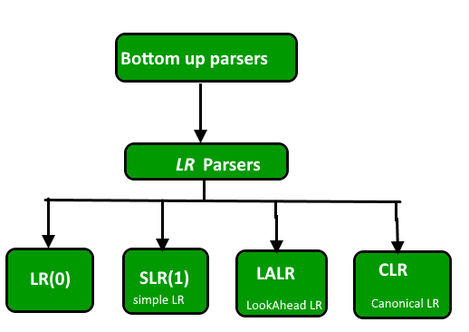
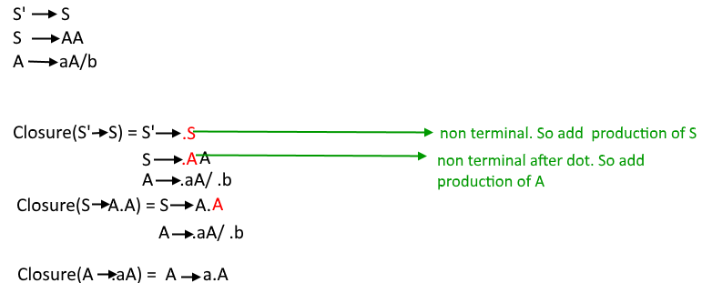
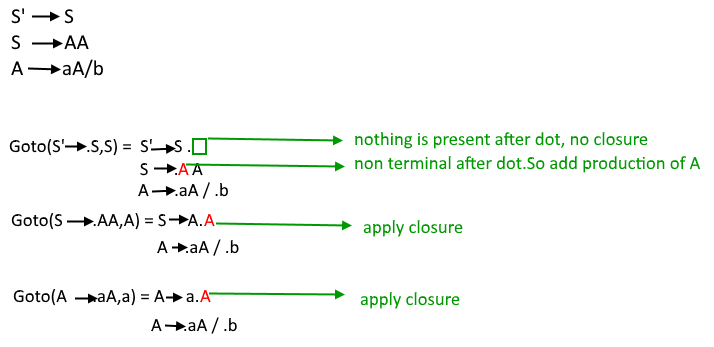
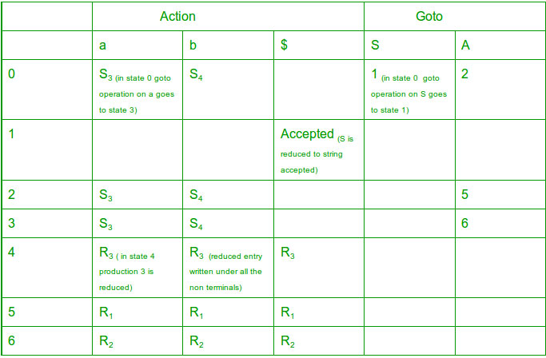

In this article we are discussing the Bottom Up parser.
Bottom Up Parsers / Shift Reduce Parsers
Build the parse tree from leaves to root. Bottom up parsing can be defined as an attempt to reduce the input string w to the start symbol of a grammar by tracing out the rightmost derivations of w in reverse.
Eg.

Classification of bottom up parsers

A general shift reduce parsing is LR parsing. The L stands for scanning the input from left to right and R stands for constructing a rightmost derivation in reverse.
Here we will look at the construction of GOTO graph of a grammar by using all the four LR parsing techniques. For solving questions in GATE we have to construct the GOTO directly for the given grammar to save time.
LR(0) Parser
We need two functions –
Closure()
Goto()
Augmented Grammar
If G is a grammar with start symbol S then G’, the augmented grammar for G, is the grammar with new start symbol S’ and a production S’ -> S. The purpose of this new starting production is to indicate to the parser when it should stop parsing and announce acceptance of input.
Let a grammar be S -> AA
A -> aA | b
The augmented grammar for the above grammar will be
S’ -> S
S -> AA
A -> aA | b
LR(0) Items
An LR(0) is the item of a grammar G is a production of G with a dot at some position in the right side.
S -> ABC yields four items
S -> .ABC
S -> A.BC
S -> AB.C
S -> ABC.
The production A -> ε generates only one item A -> .ε
Closure Operation:
If I is a set of items for a grammar G, then closure(I) is the set of items constructed from I by the two rules:
- Initially every item in I is added to closure(I).
- If A -> α.Bβ is in closure(I) and B -> γ is a production then add the item B -> .γ to I, If it is not already there. We apply this rule until no more items can be added to closure(I).
Eg:

Goto Operation :
Goto(I, X) = 1. Add I by moving dot after X.
2. Apply closure to first step.

Construction of GOTO graph-
- State I0 – closure of augmented LR(0) item
- Using I0 find all collection of sets of LR(0) items with the help of DFA
- Convert DFA to LR(0) parsing table
Construction of LR(0) parsing table:
- The action function takes as arguments a state i and a terminal a (or $ , the input end marker). The value of ACTION[i, a] can have one of four forms:
- Shift j, where j is a state.
- Reduce A -> β.
- Accept
- Error
- We extend the GOTO function, defined on sets of items, to states: if GOTO[Ii , A] = Ij then GOTO also maps a state i and a nonterminal A to state j.
Eg:
Consider the grammar S ->AA
A -> aA | b
Augmented grammar S’ -> S
S -> AA
A -> aA | b
The LR(0) parsing table for above GOTO graph will be –

Action part of the table contains all the terminals of the grammar whereas the goto part contains all the nonterminals. For every state of goto graph we write all the goto operations in the table. If goto is applied to a terminal than it is written in the action part if goto is applied on a nonterminal it is written in goto part. If on applying goto a production is reduced ( i.e if the dot reaches at the end of production and no further closure can be applied) then it is denoted as Ri and if the production is not reduced (shifted) it is denoted as Si.
If a production is reduced it is written under all the terminals in LR(0) parser.
If in a state the start symbol of grammar is reduced it is written under $ symbol as accepted.
NOTE: If in any state both reduced and shifted productions are present or two reduced productions are present it is called a conflict situation and the grammar is not LR grammar.

NOTE:
1. Two reduced productions in one state – RR conflict.
2. One reduced and one shifted production in one state – SR conflict.
If no SR or RR conflict present in the parsing table then the grammar is LR(0) grammar.
In above grammar no conflict so it is LR(0) grammar.
NOTE —In solving GATE question we don’t need to make the parsing table, by looking at the GOTO graph only we can determine if the grammar is LR(0) grammar or not. We just have to look for conflicts in the goto graph i.e if a state contains two reduced or one reduced and one shift entry for a TERMINAL variable then there is a conflict and it is not LR(0) grammar. (In case of one shift with a VARIABLE and one reduced there will be no conflict because then the shift entries will go to GOTO part of table and reduced entries will go in ACTION part and thus no multiple entries).